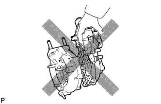
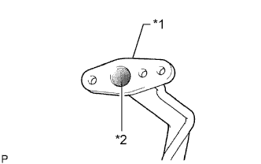
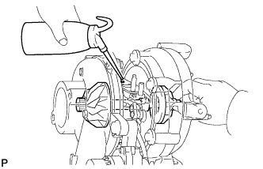

ВЫПУСКНОЙ КОЛЛЕКТОР С ТУРБОНАГНЕТАТЕЛЕМ (для моделей без DPF) > МЕРЫ ПРЕДОСТОРОЖНОСТИ |
| 1.МЕРЫ ПРЕДОСТОРОЖНОСТИ ПРИ ОБСЛУЖИВАНИИ |
Не останавливайте двигатель сразу после того, как движение осуществлялось с буксировкой прицепа, на высокой скорости или на подъеме в гору. Перед выключением зажигания дайте двигателю поработать на холостом ходу в течение 20-120 с. Выбирайте время работы на холостом ходу в соответствии с условиями движения.
Не допускайте быстрого разгона или увеличения частоты вращения коленчатого вала двигателя сразу после запуска холодного двигателя.
Если турбонагнетатель неисправен, его необходимо заменить. Также установите причину неисправности, включая условия, в которых использовался турбонагнетатель. При необходимости выполните ремонт или замену:
Моторное масло (неправильный уровень или низкое качество)
Повреждения маслопроводов, идущих к турбонагнетателю
|  |
Будьте осторожны при снятии и повторной установке турбонагнетателя в сборе. Не роняйте, не ударяйте и не зажимайте легко деформируемые части узла, такие как привод и шток, при снятии и установке.
Перед снятием закройте впускные и выпускные каналы и канал подачи масла, чтобы не допустить проникновения загрязнений и посторонних предметов.
|  |
В случае замены турбонагнетателя проверьте, нет ли отложений в маслопроводе. При необходимости замените маслопровод.
| *1 | Маслопровод |
| *2 | Отложения |
Тщательно удалите все остатки материала старой прокладки с фланца маслопровода подачи смазки и фланца подачи масла в турбонагнетатель.
Во избежание повреждения и деформации при замене болтов или гаек используйте только фирменные детали компании TOYOTA.
|  |
В случае замены турбонагнетателя залейте 20 куб. см (1,2 куб. дюйма) свежего масла в отверстие подачи масла в турбонагнетатель и рукой поверните колесо турбины, чтобы масло равномерно распределилось по поверхности подшипника.
В случае переборки или замены двигателя прекратите подачу топлива после сборки и прокручивайте коленчатый вал двигателя в течение 30 с для равномерного распределения масла по всем внутренним поверхностям двигателя.
Затем восстановите подачу топлива и дайте двигателю поработать на холостом ходу в течение 60 с.
Так как колесо турбины вращается очень быстро, работа двигателя без воздушного фильтра, крышки воздушного фильтра и шланга может вызвать повреждение колеса турбины вследствие проникновения посторонних частиц.